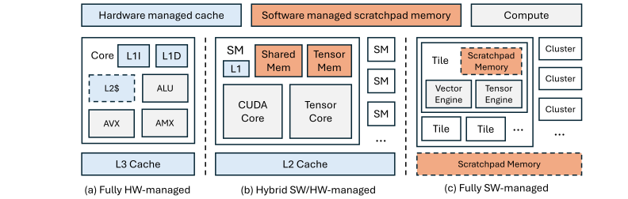

Memory Hierarchy: From Hardware Cache to Software Scratchpad
On-chip SRAM sits on a spectrum from implicit, hardware-managed caches to explicit, software-managed scratchpads. The trade is programmability and compiler simplicity against performance predictability and quality of service.

CPUs anchor the hardware-managed end, using multi-level caches where hardware decides placement, replacement and coherence and software addresses a flat space. Generality is excellent, especially for irregular access, but performance analysis is hard because hits, misses and contention all depend on dynamic behaviour. This approach has not left the datacenter: Intel's Gaudi 3 uses configurable SRAM that can serve as a shared L3 or as per-core L2 caches, and adds semantics-aware caching — a Memory Context ID tags lines by algorithmic usage, and allocation hints let developers direct data to L2, L3 or both.
GPUs and domain-specific accelerators expose part of the SRAM instead. NVIDIA partitions each streaming multiprocessor's SRAM between a hardware-managed L1 and software-managed shared memory, so a programmer can orchestrate tiling explicitly while leaving other access patterns to the caches; Blackwell adds a dedicated tensor memory per SM for Tensor Core operands [1]. Scratchpads shift tile sizing, double buffering, prefetch scheduling and synchronization onto the compiler and programmer, and return determinism — the property that makes predictable tail latency, interference isolation and quality-of-service guarantees achievable. AWS NeuronCore is built around this compiler-managed locality model [2].
Memory management is also moving past the chip boundary. NVSHMEM exposes a symmetric memory region on every GPU so kernels can read, write and perform atomics on remote GPU memory over NVLink, PCIe or InfiniBand [3], and Groq backs a logically shared global address space with distributed on-chip SRAM across devices [4].
Compute-in-memory is the complementary extreme, performing simple arithmetic where the data resides rather than staging it into separate arrays — most effective for bandwidth-bound operations with limited reuse, least effective where a matrix engine could have amplified that reuse instead.
References
- 1.Kyle Aubrey and Nick Stam. Inside NVIDIA Blackwell Ultra: The Chip Powering the AI Factory Era. 2025.
- 2.AWS. NeuronCore-v4 Architecture. 2026. AWS Neuron SDK 2.31.1 documentation.
- 3.NVIDIA. Programming Model Overview. 2020. NVSHMEM 1.0.1 documentation.
- 4.Dennis Abts et al. A software-defined tensor streaming multiprocessor for large-scale machine learning. Proceedings of the 49th Annual International Symposium on Computer Architecture, 2022.